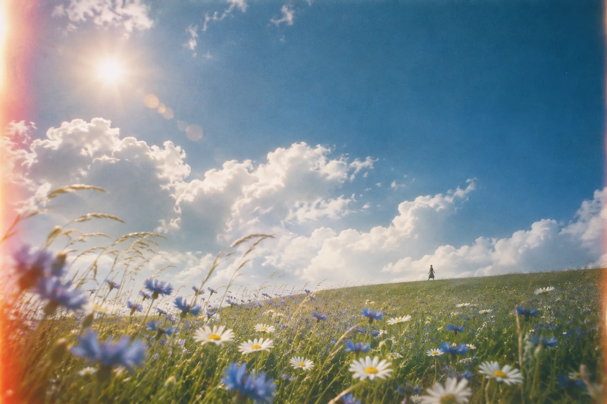
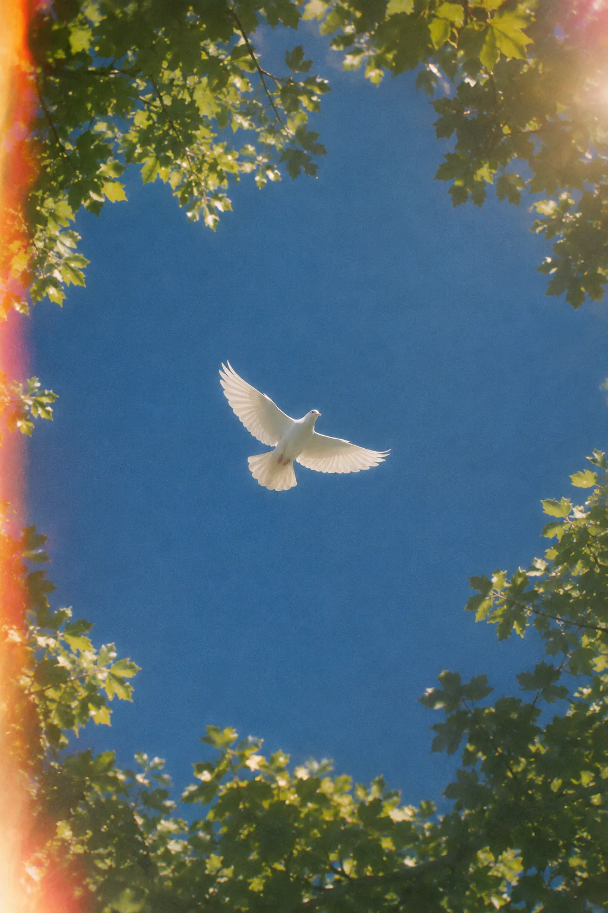
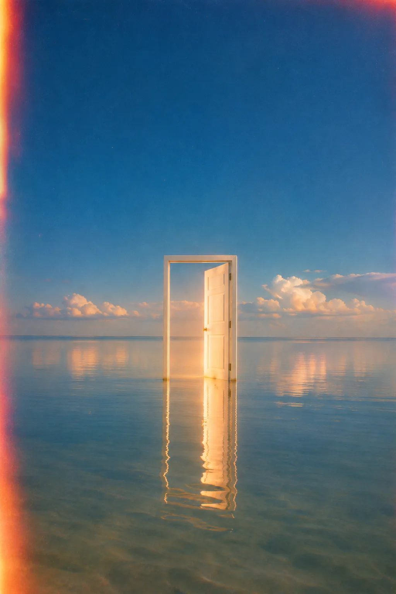
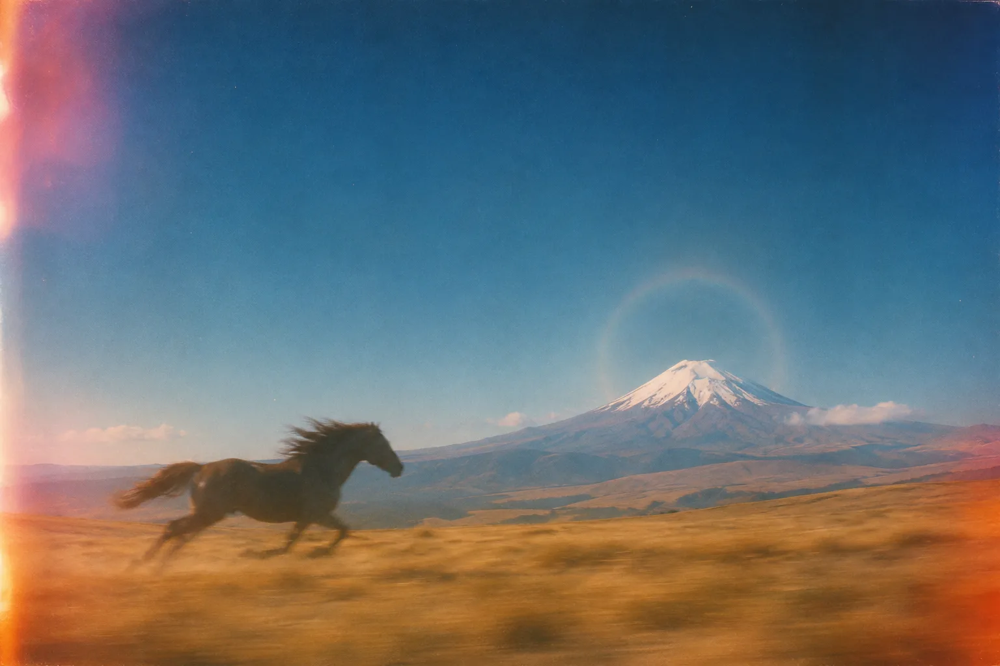
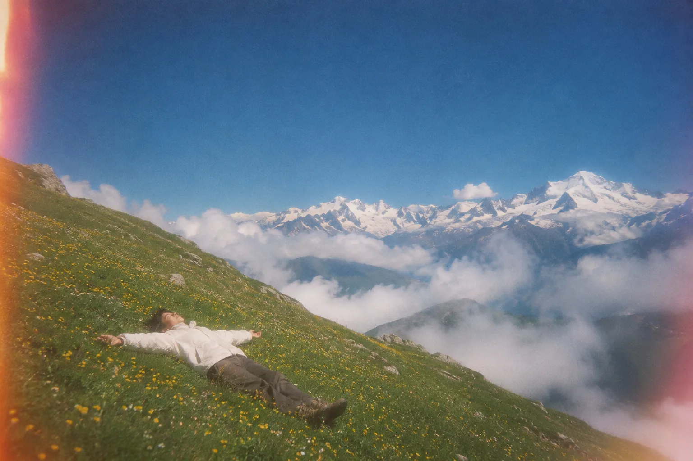
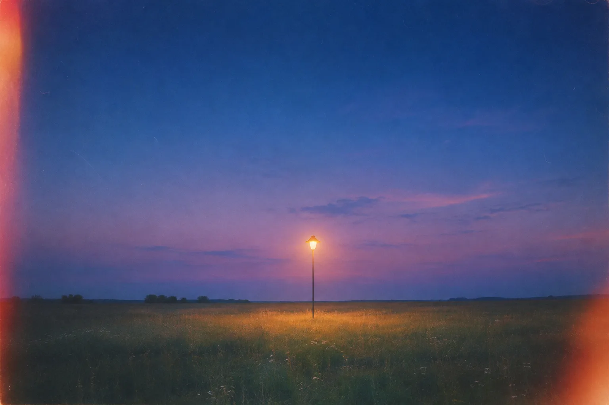

Пункт 06 · Ведение диалога
«Я передам вопрос специалистам.»
Оператор не сказал, когда ждать ответа. Клиенту пришлось переспросить.
Оценка 4 / 10
Проверяющий может изменить

Freedom Broker · поддержка
Ассистент Freedom отвечает за пару секунд. Когда вопрос касается денег или счёта, к разговору подключается живой специалист.

01 · Ассистент
Он учился на том, как отвечают настоящие операторы Freedom. Если точного ответа нет, ассистент не будет угадывать и позовёт человека.

02 · Специалист
Деньги, счёт или просто надоело говорить с ботом. В этот момент разговор переходит к специалисту. Он видит всю переписку, так что повторять ничего не придётся.

03 · Срок
Раньше было «Я передам вопрос специалистам», и дальше тишина. Теперь вы видите срок. Обычно специалист отвечает меньше чем через две минуты.
Для Freedom
Теперь о том, что видит Freedom.

04 · Качество
Чаты и звонки сверяются с чек-листом Freedom из восьми пунктов. У каждой оценки есть цитата из разговора. Последнее слово остаётся за проверяющим.
Пункт 06 · Ведение диалога
«Я передам вопрос специалистам.»
Оператор не сказал, когда ждать ответа. Клиенту пришлось переспросить.
Оценка всегда показывает строку, на которой она основана. Если пункт к разговору не относится, ставится N/A. Грубые ошибки отмечаются отдельно от баллов.
05 · Проверено
Диалоги на русском, казахском и английском. Оценки системы сравнили с оценками проверяющих.
Демо · 2 мин

Ассистент ответит сразу. Если понадобится человек, он тоже придёт.